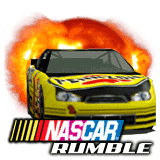
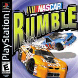
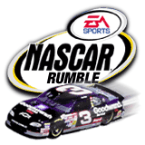
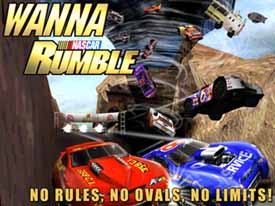
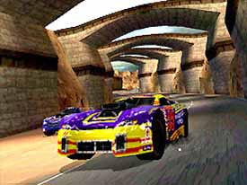

NASCAR Rumble for the PlayStation:
Internship work
at Electronic Arts, 1999



I worked as an intern at Electronic Arts in San Francisco,
California during the summer of 1999. I programmed special effects
graphics for Nascar Rumble.
"EA Sports' NASCAR Rumble is an over-the-top, almost-NFL-Blitz-like version
of NASCAR racing that throws all the conventional rules of NASCAR right out
of the window."
"...this game is very similar to the arcade classic San Francisco Rush in
both style and feel; as in San Francisco Rush you just go mind-bendingly
fast until you bash your car into something and send the object hurling
through the air."
"Visually, NASCAR Rumble is quite good. The sense of speed you get when
playing the game is tremendous - no seriously, when you play NASCAR Rumble
you'll swear it's the fastest racing game you've ever played on the
PlayStation."


|